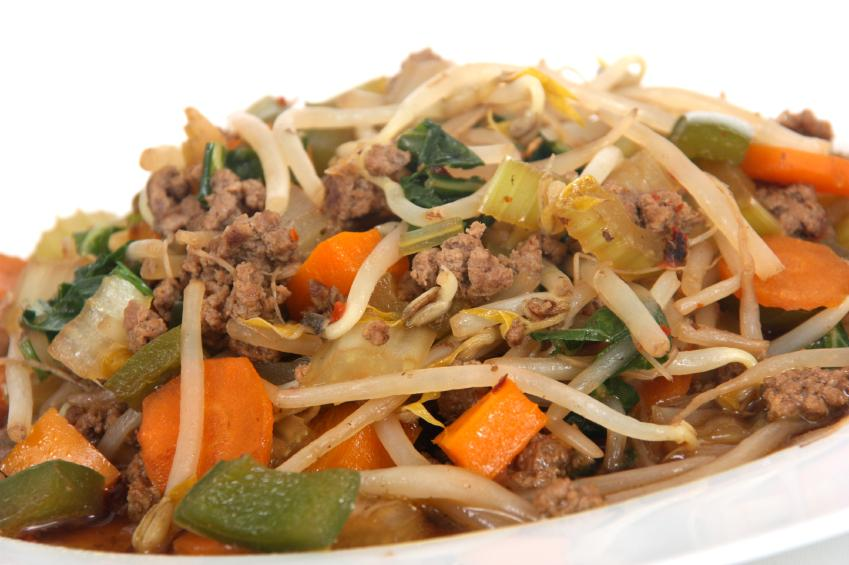

Chop Suey

Chop suey is a dish in American Chinese cuisine and other forms of overseas Chinese cuisine, consisting of meat (often chicken, fish, beef, shrimp, or pork) and eggs, cooked quickly with vegetables as bean sprouts, cabbage, and celery and bound in a statch-thickened sauce.
It is typically served with rice but can become the Chinese-American form of chow mein with the addition of stir-fried noodles.
Ingredients
- ¼ cup shortening
- 1 ½ cups diced pork loin
- 1 cup diced onion
- 1 cup diced celery
- 1 cup hot water
- 1 teaspoon salt
- ⅛ teaspoon ground black pepper
- 1 (14.5 ounce) can bean sprouts, drained and rinsed
- ⅓ cup cold water
- 2 tablespoons cornstarch
- 2 teaspoons soy sauce
- 1 teaspoon white sugar
Steps
- Heat shortening in a large, deep skillet. Sear pork until it turns white, then add onion and saute for 5 minutes. Add celery, hot water, salt and pepper. Cover skillet and simmer for 5 minutes. Add sprouts and heat to boiling.
- In a small bowl combine the cold water, cornstarch, soy sauce and sugar. Mix together and add to skillet mixture. Cook for 5 minutes, or until thickened to taste.
Recipe taken from allrecipes.
Back to the Home Page